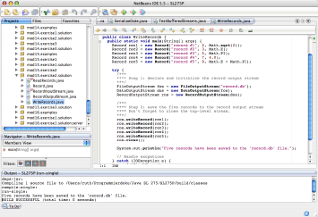
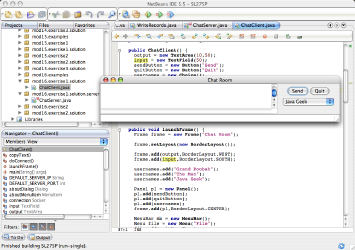

Chances are good that you, like many programmers, are self-taught, either in part or in full. You ask questions on forums, learn from code samples and APIs, and you feel familiar enough with the features your language of choice has to offer.
This approach gets you pretty far and is free, so why take a formal programming course at all? We had our intrepid reporter attend SL-275, a Java training class offered by Sun Microsystems. Here is her report.
A formal programming class gives you the background and theory which is missing in on-the-job training. As your applications grow more sophisticated, you reach a point where you can save months in developing time by investing one week in training. Training provides a framework on which to hang the details of a new technology. It provides you with clear technical vocabulary and accurate search terms which enable you to quickly deep-dive into a new API. Also, the certificate looks great on your resume.
Of course, you learn analysing and designing an application best by doing it. As beginners, autodidacts may miss a piece of the theoretical background that would make existing knowledge fall into place in the bigger picture.
You may know that you can pass command line switches to your Java application at start-up, but what API do you search for to create such a switch? What is the best practice to prevent graphical user interfaces from growing irresponsive under load? And what is the difference between an exception and an error anyway?
The most important step before deciding on a class is determining your entry-level. A good advanced class teaches one technology in depth; a good beginner's class gives you a wide overview of all the language features and technical terms.
When look for a solid and comprehensive introduction to platform-independent software development, SL-275: The Java Programming Language is for you: This class covers object-oriented programming concepts in general, and the Java environment and syntax in particular.
If you have no prior experience with general programming concepts, consider taking the SL-110: Fundamentals of the Java Programming Language class first.
SL-275 assumes that you already have fundamental programming experience. You should be familiar with terms like variable or operator, and with using a text editor and a web browser. When you have created and run short programs in another programming language before, SL-275 will bridge the gap to accomplish the same feat in Java.
The course consists in equal parts of practical and theoretical sections. And of course it includes comprehensive learning materials: Every student receives an annotated copy of the lecture script, a NetBeans IDE reference guide, sample code, and a student workbook.
The workbook presents the student with actual tasks to put the theoretical session into action. Each task comes in three levels:
The first level outlines steps to accomplish the task, leaving the implementation as an exercise to the student. To check whether your solution is on the right track, turn the page and read level 2. If you should get stuck, turn to level 3 which will guide you through each step to the best solution. This allows you to repeat the exercises even at home without the teacher.

Learn how to store
user data: Save it to and restore it from a data file.
During the exercises, the teacher introduces NetBeans editor features when the situation asks for it. It is good to know that the IDE takes care of repetitive tasks for you.
Notice how often you type System.out.println(""); or for-loop code?
Then remember to use abbreviations for common code snippets in the IDE:
For instance, NetBeans auto-completes the abbreviation sout_
(four letters followed by a blank) to a println statement.
The abbreviation fori_ (also followed by a blank) expands to a for-loop block.
After five days, you will know what is needed about objects, flow control and data structures. You will have implemented sample applications with graphical and textual user interfaces. And you will even have employed event handling, threading, networking, exception handling, and input/output streams.
Don't worry if such a comprehensive overview of Java Platform features seems overwhelming. The goal is not to learn it all by heart, but rather to know what is available and how to find it when you need it.
Now that you know that a Java application's command line switches are accessible through the System Properties API, you know what to search for when you need them. The next time your graphical user interface bogs down and stalls, you keep it responsive by creating threads for each subtask. You may not be able to prevent errors (like the user running out of memory), but now you create solid applications by catching common exceptions (like the user mistyping a file path).
Again the IDE assists you: It displays possible methods, constants, and variables in its code completion window, and surrounds tricky statements with exception handling code skeletons.

Learn how to
implement client/server communication over the network.
I really liked how clearly structured the course was. After I came home I was able to set up my first larger Java project in one go. Even if I did not get everything perfect right away, this time I at least knew what solution to look for.
The only thing I was disappointed about was that the course only briefly touched GUIs (graphical user interfaces) in its AWT chapter. I would have liked to learn more about Swing and the NetBeans GUI builder. But Swing is a vast topic that is certainly worth spending an extra day in a web-based training on.
Apart from that, SL-275 gave me the much-needed bird's eye view of the Java API, and it supplied me with solid background information to allow me to proceed developing Java SE tools and applications in a more efficient way.
Update 2007-02-20: SL-275 is currently being updated and the new version will replace AWT topics with Swing!
{kind=link}
{kind=link}